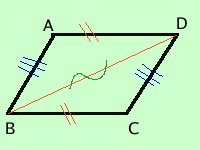

Teorema
In un parallelogramma i lati opposti sono congruenti
e viceversa
Se in un quadrilatero i lati opposti sono congruenti allora il quadrilatero e' un parallelogramma
Dimostriamo prima il teorema diretto e poi il teorema inverso
teorema diretto
in un parallelogramma i lati opposti sono congruenti
ipotesi
AB // CD
BC // AD |
tesi
AB = CD
BC = AD |
Dimostrazione
congiungo i punti B e D ed ottengo i due triangoli ABD e BDC;
essi hanno:

- ABD^e' congruente a BDC^perche' alterni interni rispetto alle parallele AB e CD tagliate dalla trasversale BD
- ADB^e' congruente all'angolo DBC^perche' alterni interni rispetto alle parallele AD e BC tagliate dalla trasversale BD
- il lato BD in comune
Quindi i due triangoli ABD e BCD sono congruenti per il secondo criterio di congruenza dei triangoli (un lato e due angoli) e quindi hanno congruenti tutti gli elementi, in particolare
AB = CD e BC = AD come volevamo
teorema inverso
Se in un quadrilatero i lati opposti sono congruenti allora il quadrilatero e' un parallelogramma
ipotesi
AB = CD
BC = AD |
tesi
AB // CD
BC // AD |
Dimostrazione
congiungo i punti B e D ed ottengo i due triangoli ABD e BDC;
essi hanno:

- il lato AB congruente al lato CD per ipotesi
- il lato BC congruente al lato AD per ipotesi
- il lato BD in comune
Quindi i due triangoli ABD e BCD sono congruenti per il terzo criterio di congruenza dei triangoli (tre lati) e quindi hanno congruenti tutti gli elementi; in particolare:
essendo l'angolo ABD^ congruente all'angolo BDC^ ed essendo questi angoli alterni interni rispetto alle rette AB e CD tagliate dalla trasversale BD allora le due rette AB e CD saranno parallele
essendo l'angolo ADB^ congruente all'angolo DBC^ ed essendo questi angoli alterni interni rispetto alle rette BC e AD tagliate dalla trasversale BD allora le due rette BC e AD saranno parallele
come volevamo
Avendo dimostrato sia il teorema diretto che quello inverso i due fatti, parallelogramma e lati opposti congruenti, saranno equivalenti
|